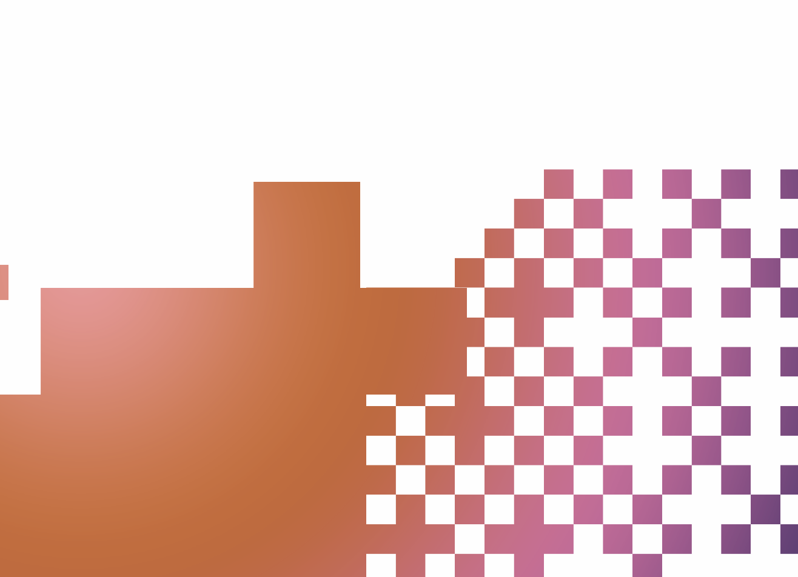

El llavero se entiende como un elemento esencial para ALTERNO.
Con él vas a poder modificar, interactuar, y conectarte con lo digital.
Con él, eres parte de las EEASS, con él te identificas, con él creas.
ArrastraDesliza para girar